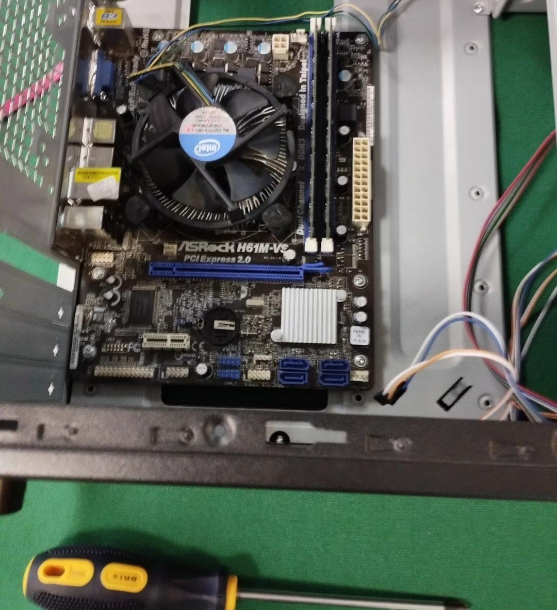
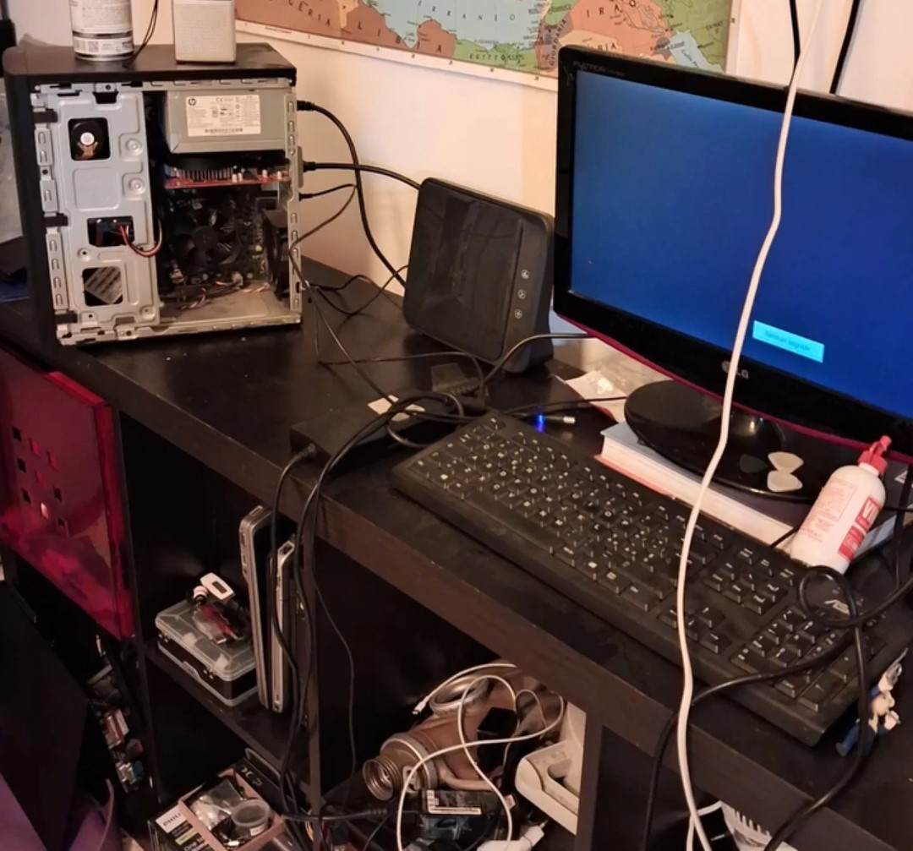

Progetti
Alcuni dei miei lavori recenti

Assemblaggio e Configurazione PC
Progetto completo di assemblaggio di un computer desktop da zero. Selezione dei componenti, montaggio hardware, installazione sistema operativo windows e configurazione driver.

Portfolio Website
Sviluppo completo di questo sito portfolio personale. Progettazione dell'interfaccia, struttura HTML, stile CSS e interattività JavaScript.

PDA Personale Domestico
Sviluppo di un Personal Digital Assistant per uso domestico. Gestione delle attività, note e organizzazione personale.

Creazione Server
Configurazione e messa in opera di un server all'interno del mio laboratorio per ospitare le applicazioni sviluppate.

Potenziamento Server
Upgrade del server tramite selezione e installazione di componentistica hardware dedicata per migliorare prestazioni e affidabilità.
Cluster di Server
Sviluppo di un cluster di server per distribuire il carico di lavoro e garantire alta disponibilità delle applicazioni ospitate.